שבועיים בארץ הפיורדים - נורבגיה
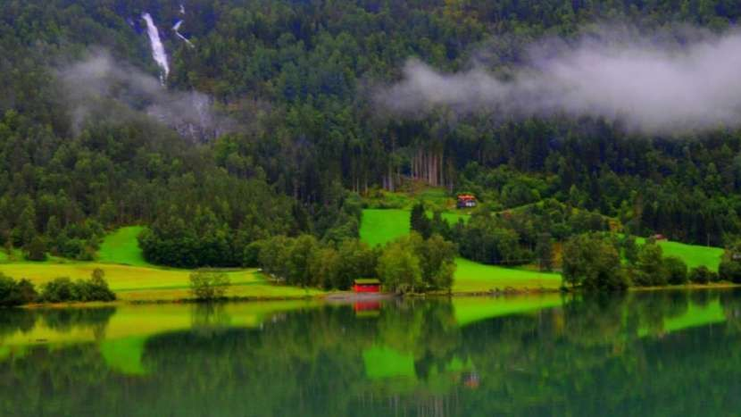
לכל התמונות מהטיול:
https://www.flickr.com/photos/127066806@N05/sets/72157647684647537/
אז איך הגענו לנורבגיה? ועוד ירח דבש... אפשר להגיד שזה היה במקרה. אחרי החתונה התחלנו לחשוב על יעדים פוטנציאליים והתלבטנו בין תאילנד ואיסלנד, כן כן ממש יעדים שונים לגמרי. אחרי כמה ימים של בטן גב במלון בראשית (בחודש יולי יומיים אחרי החתונה) הגענו למסקנה שאנחנו רוצים איסלנד ולא סתם איסלנד אלא בקראוון! (החופש של הנסיעה במרחבים ירוקים עם נופים מהממים קורץ לנו יותר). אחרי שהחלטנו על יעד התחלנו לבדוק מחירים לסוף אוגוסט (זה מה שהתאפשר עם העבודה) ומה גילינו? אין בכל איסלנד קראוון קטן וחמוד שיתאים לנו. ולא רק שאין קראוון אין גם מקומות לינה (למקרה ונשכיר רכב) אז לצערי איסלנד תאלץ לחכות וחזרנו לנקודת ההתחלה.
אחרי שבוע נפל לי האסימון – נורווגיה! זה קריר, נופים יפים והכי חשוב מבדיקה זריזה בטרווליסט יש כרטיסים ב-500 דולר! אז הנה יש יעד!
הזמנו כרטיסים דרך אתר טרווליסט בחברת אירופלוט הרוסית עם קונקשן של 12 שעות במוסקבה בהלוך ובחזור. לנו זה היה מעולה כי לבעלי יש שם משפחה וזכינו לאחלה יום של שיטוטים בעיר ולמפגש משפחתי חם J.
ב-15/8 בשמונה בערב שעון נורבגיה נחתנו באוסלו אחרי טיול ארוך במוסקבה. הזמנתי מראש מקומות לינה במלון ליד שדה התעופה דרך בוקינג – מלון comfort ranway בעלות של 780 NOK לזוג כולל ארוחת בוקר (כל המחירים יהיו בקרונות נורבגיות שזה כ-0.6 ₪) ו-100 NOK עבור חנייה. אספנו את הרכב (שודרגנו ליונדאי IX 35 חדש דנדש מסוכנות AVIS) ונסענו למלון להשלים שעות שינה אחרי טיסת לילה שלא ממש ישנו בה.
16/8 – כביש 7.
קמנו ליום סגרירי ואפור אבל הי, אנחנו בנורבגיה! אכלנו ויצאנו לדרך. חשוב לי להגיד שבניגוד לטיולים הקודמים אותם תכננתי לפרטי פרטים התכנון לנורבגיה היה ממש ספונטני, עברתי על מספר טיפים ובלוגים באתר למטייל בניתי מסלול ויצאנו, אמרתי שמקסימום נעצור בתחנות מידע לתייר ונתייעץ או שפשוט נזרום עם הדרך...
התכנון ליום הראשון היה לנסוע על כביש 7 עד גול או גיילו. כיוונו את הGPS לעיירה גול והתחלנו בנסיעה.
טרם הכניסה לכביש 7 עוברים בעיירה Hofness בסמוך אליה יש אגמים רבים ובקתות בהרים והמון מסלולי הליכה. שוטטנו קצת ליד האגם והמשכנו הלאה.
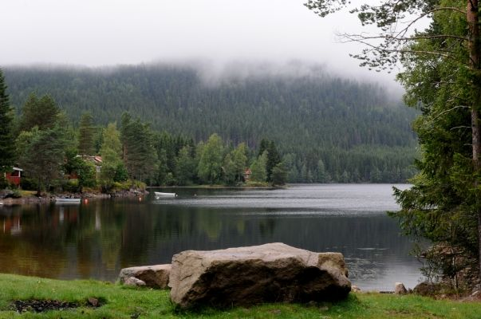
באחת העיירות ליד היה מתחם חניות- הגיע הזמן להצטייד באוכל (כי ממה שקראתי בטיפים המסעדות בנורווגיה יקרות בטירוף) נכנסנו לרשת COOP (הרשת הזולה ביותר במדינה- זה לאחר שהשוונו מול רשתות אחרות והפריסה שלהם מעולה! בכל מקום יש סניף של COOP) והצטיידנו באוכל להיום. המשכנו בנסיעה על כביש 7 ברקע אגמים יערות ואז התחיל לרדת גשם.
התקרבנו לעיירה FLA ושם קלטתי פרסומת של פארק דובים. בגלל שירד גשם (טפטופים מעצבנים כאלה) החלטנו לעצור שם ולראות במה מדובר. אז ככה מדובר בשמורה ענקית של דובים ועוד חיות רבות (איילים, מוס, חיות משק ואפילו חתולים גדולים) הכניסה למקום עולה 420 NOK לזוג. בכניסה למקום יש מסעדה וכן חנות מזכרות – אני קניתי לי כיסוי גשם בצורת דוב! טיילנו בפארק המאוד חביב (למרוב הגשם), צפינו בהאכלת הדובים ושאר החיות, ראינו איילים, חיות משק ועוד. אחרי שמיצינו המשכנו במסלול ועצרנו באזור פיקניק (ממש על הכביש) לארוחת צהריים.
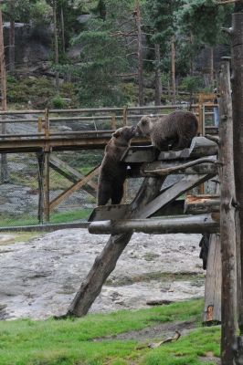
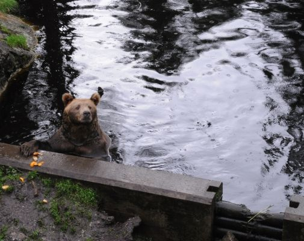
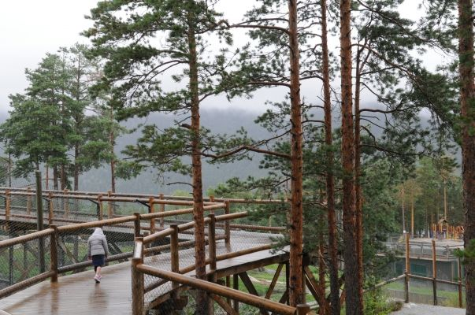
בנורווגיה יש מספר כבישים המסומנים כדרך נוף, בהם יש המון עצירות מסודרות לתצפיות ושולחנות לפיקניק בכל עצירה. אם לא הגשם החוויה הייתה מתעצמת מאוד, לא נורא. אנחנו ממשיכים לגול.
גול היא עיירת סקי אשר בקיץ די שוממת, אבל ליד הנהרות סביב העיירה פזורים המוני קמפינגים בהם ניתן לעשות גם כל מיני אטרקציות כמו דיג, שייט בסירה וכו'. השעה שש בערב החלטנו לנסות את הקמפינגים באיזור גול (אחד הומלץ ע"י הפקידה במידע לתייר) אבל כשהגענו המקום היה מלא. לא נורא, החלטנו להמשיך לכיוון גיילו (שזה במילא בדרך) ואמרנו מקסימום לא נמצא מקום לינה נחזור לכיוון גול (כן בטח נחזור...). גיילו לא שונה מגול רק ההבדל ששם אין נהר ליד. העיר היא גן עדן לסקי אבל משעממת בקיץ (אולי גם כי היינו בשעה מאוחרת אז הכל היה סגור). בכל אופן גם שם לא מצאנו משהו לרוחנו (קמפינג בהרים ללא נוף כלל) ושוב אמרנו שנמשיך להתקדם, אם לא נמצא נחזור...
הדרך הופכת להיות מדהימה! אנחנו כ-1000 מ' מעל פני הים, הכל שומם, ברקע פסגות מושלגות ואגמים כחולים כחולים. וכמה מפתיע – אפילו לא קמפינג אחד. טוב ממשיכים השעה רק 7 בערב...
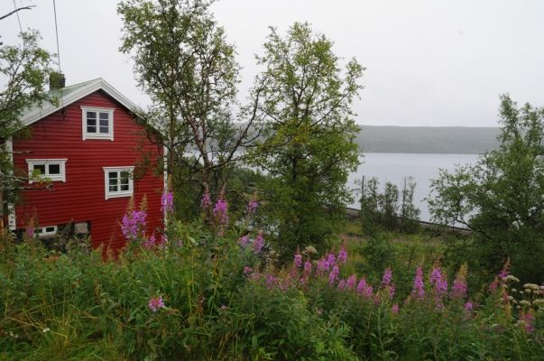
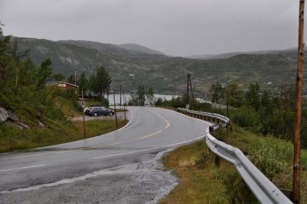
פתאום באמצע שום מקום יש מלון, החלטנו לנסות שם ולהפתעתנו היה חדר פנוי ב-900 NOK אבל אם שתי מיטות יחיד (אנחנו בירח דבש מה כבר מעכשיו נישן כמו גרושים?) ויתרנו וכרגיל חזרנו על המשפט שלנו "מקסימום נחזור".
השעה כבר נהיית מאוחרת (שמונה בערב אבל עדיין אור) פתאום אנחנו רואים הר מושלג וסכר (סכר סיסאן) ישר אנחנו פונים לשם, ואכן מתוגמלים בנוף מהמם! אגם כחול וברקע הר מכוסה שלג! אנחנו באוגוסט ויש שלג על ההר! בחניה יש מספר קראוונים שחנו ללינה וזה הרגע שאנחנו מזה מצטערים שאנחנו לא בקראוון – אין לנו עדיין מקום לינה! לא נורא נמשיך בדרך...
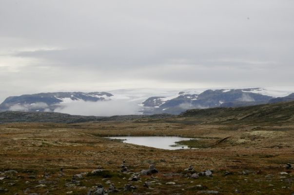
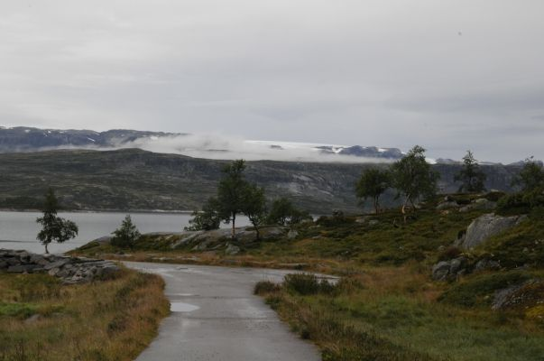
הקטע הזה של כביש 7 כלכך מהמם שאני ממש מרגישה פספוס שלא חווינו אותו כמו שצריך, היינו עסוקים מידי בלחפש קמפינג או מלון וכל מקום שהיינו היה מלא לגמרי! (זה ממש לא מה שהיה כתוב בטיפים שאין בעיית מקום) ואני כבר מדמיינת אותנו ישנים ברכב... בירח דבש....
הכביש מתחיל לרדת לכיוון הפיורד (אדיפיורד) מכל מקום מפלים ועוד מפלים (כמובן המון מקומות עצירה) רק שלנו כבר אין מצב רוח אנחנו ממש לחוצים... הגענו לאדיפיורד וגילינו את הסיבה לתפוסה המטורפת בכל האיזור. מחר נפתח הגשר החוצה את הפיורד ובעצם מבטל את המעבורת (הגשר ה-9 הארוך בעולם – לפחות ככה אמרו לנו) וכנראה כל תושבי נורבגיה החליטו להגיע ולצפות במחזה ואנחנו כבר מיואשים לגמרי.
טוב מקסימום נסע ישר לברגן... זאת המחשבה שחולפת לי בראש...
אנחנו עולים על המעבורת האחרונה (תרתי משמע) שיוצאת מאדיפיורד לצד השני (מחר המעבורת נסגרת בכלל הגשר) ואז הקופאית במעבורת ממליצה לנו לנסוע לעיירה בשם ULVIK אמנם זו סטייה קלה מהדרך אבל יש שם מספר קמפינגים וכדאי לנו לנסות. אנחנו אחוזי תקווה נוסעים לשם ואכן בכניסה לעיירה יש קמפינג! הגענו ב-22:00 כבר חשוך למזלנו הקמפ' שייך למלון ובמלון פקידת הקבלה מודיעה שיש בקתה פנויה אבל שירותים ומלקחת במבנה נפרד. אנחנו מיד מסכימים ונפרדים מ-600 NOK אבל יש איפה לישון!!! אנחנו כלכך רעבים אבל המסעדה היחידה שיש בישוב (במלון שנמצא בתוך העיירה) כבר סגורה. טוב נסתפק בחטיפים לפחות יש איפה לישון.
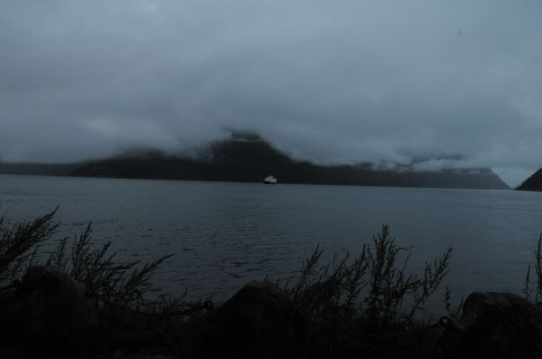
קצת לגבי הקמפינגים בנורבגיה:
זו האופציה הכי סבירה לכיס. יש המון קמפינגים והשילוט מעולה. בכל קמפינג יש בקתות (CABINS ) והן נבדלות אחת מהשנייה במספר החדרים/עם שירותים ומקלחת או בלי/כיור עם או בלי וכו'. בכל בקתה יש מיטה (לרוב זה מקביל למיטה וחצי – 120 סמ' רוחב) כלי בישול וסכום יש תמיד, מצעים- מומלץ לקחת מהבית. יש כלי מיטה (כריות ושמיכות חמות) אבל מצעים אין, בחלק מהמקומות ניתן להשכיר אבל חבל על הכסף. כנ"ל מגבות. הקמפ' לרוב יהיו במקומות הכי יפים עם נופים משגעים ובאמת שיש בשפע ככה שאל תתפשרו על המקום הראשון שתראו (כמובן אם לא תהיו במצב שלנו שבמקרה תגיעו לאיזה פתיחה של גשר... זה כבר אירוע חריג). קמפינגים בפיקוח ממשלתי מסומנים ע"י אסקימואי שנושא גלידה, אבל יש גם הרבה פרטיים ולא פחות טובים. לגבי מחירים, אנחנו לא הצלחנו להבין את השיטה. בחלק מהמקומות בקתה עם שירותים ומקלחת מפנקת ממש עולה 500 NOK ובחלק בקתה בלי שירותים או אפילו כיור עם ספה נפתחת במקום מיטה עולה 700 NOK לכו תבינו...
בכל אופן אחרי שהתמקמנו הלכו למקלחת (צריך מטבע של 5 NOK כדי לקבל זרם חם של 5 דקות) המקלחת והשירותים מבריקים! ממש לא כמו הקמפינגים בארץ... החלטנו להוסיף עוד 200 NOK ולקבל ארוחת בוקר במלון (לא ראינו איזור קניות בסביבה וחוץ מזה הכל נפתח רק ב-10 בבוקר)...
זהו ככה תם היום הראשון.
17/8 – מגיעים לברגן וממשיכים הלאה.
קמנו ליום שמשי ואני לקחתי את המצלמה ויצאתי להסתכל על הסביבה (אתמול הגענו בחושך ככה שלא ראינו כלום) הנוף פשוט ואווו... אין מילים לתאר אז הינה תמונה J
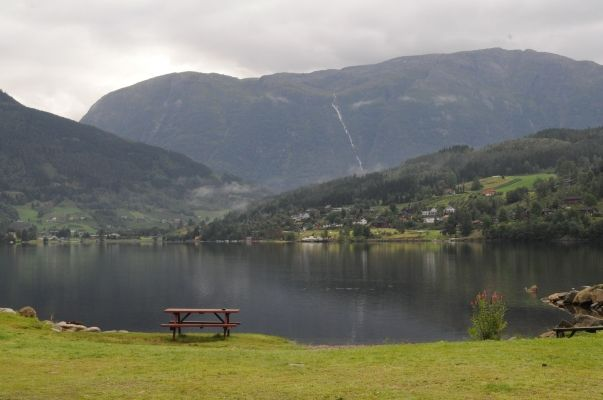
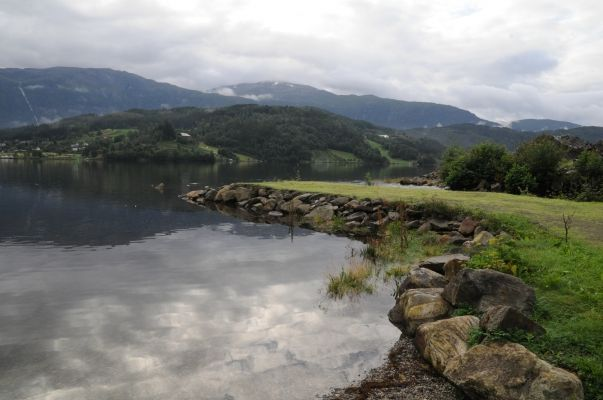
הלכנו למלון לאכול את ארוחת הבוקר שהזמנו (היתה סבירה) ויצאנו שוב לדרך (ממשיכים על כביש 7).
אנחנו נוסעים לאורך האדפיורד הנוף משגע! עננים לבנים, שמיים כחולים והמים משקפים הכל פשוט מדהים! פתאום אנחנו רואים מרחוק את הסיבה לצרותינו אתמול בערב – הגשר. אכן הוא די גדול אבל עדיין לנו הישראלים לא ברור למה חצי מדינה צריכה להגיע ולחזות בפתיחה של גשר... זה לא שאין גשרים בנורבגיה, טוב נו הם משועממים כנראה.
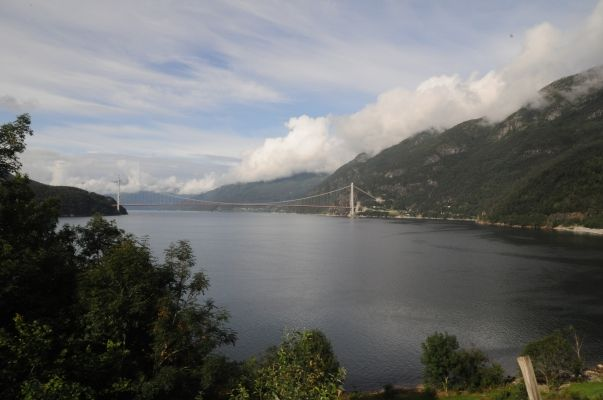
הקטע הבא של כביש 7 הוא כבר בתשלום (אין לי מושג מה העלות. כמעט בכל הרכבים המושכרים יש שבב על החלון שמחייב אוטומטית- אם אין לכם כדאי שתעשו כזה כי זה ממש נוח. בסוף חברת ההשכרה מחייבת את האשראי שלכם ואין לכם כאב ראש או חלילה איזה כנס – כי צריך לשלם עוד באותו היום באינטרנט או טלפון או תחנת דלק...) אז כמו שאמרתי גם קטע כביש זה הוא מהמם!
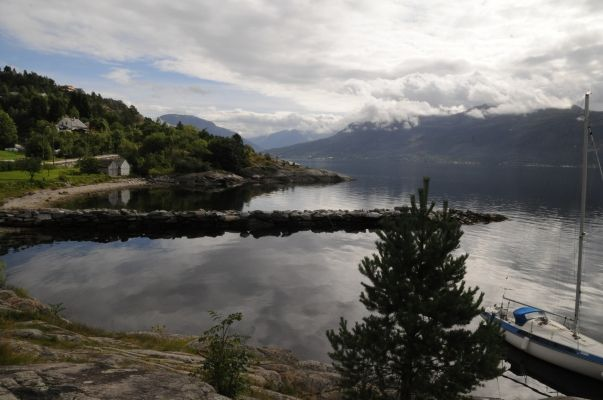
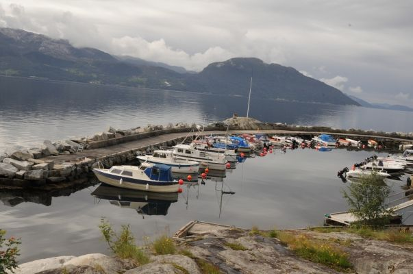
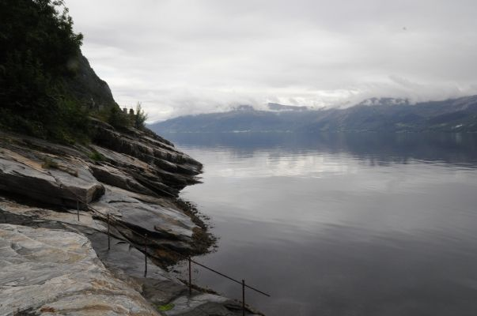
מצאנו רשת COOP והצטיידנו באספקת מזון להיום (כולל ארוחת ערב, אגב יש שם גם המון אוכל שכבר מוכן כל מה שצריך זה לחמם וזה מאוד נוח כשמגיעים לקמפ'...).
קראתי שעל כביש 7 יש שני מפלים ( voringfossen ו- steinsdalsfossen ) אבל הייתי בטוחה שפספסנו אותם אתמול בגלל כל הלחץ עם הלינה...
אז זהו שהנה אחד מהם ה- steinsdalsfossen. כבר מהכביש רואים אותו. היופי שלו זה שניתן להיכנס ממש מאחורי המפל וזה מה שעשינו.
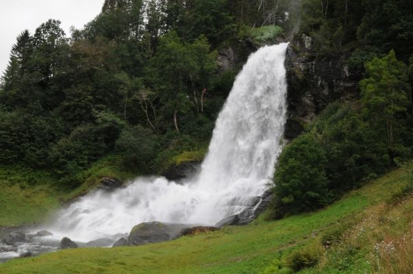
אחרי שקצת נרטבנו מהרסס לא ציפינו לראות בהמשך הדרך מפל הרבה אבל הרבה יותר גדול! הוא נמצא כחצי שעה נסיעה מהמפל הקודם (על כביש 7) קצת אחרי שיורדים מההרים... והוא פשוט מדהים! נתקלנו בו במקרה (ראינו בשולי הדרך שירותים – אגב גם לשירותים יש שילוט J והם נקיים מאוד!) עצרנו ואז ראינו אותו נופל מההר שירדנו ממנו. אני מצרפת תמונה של בעלי (הנקודה הכחולה) ברקע המפל – רק שתראו את הגודל. רק מלהתקרב אליו נרטבתי לגמרי מהרסס...
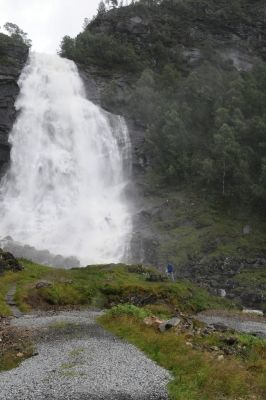
למודי ניסיון מאתמול התחלנו לחפש קמפ' באיזור ברגן, אבל מה שאהבנו היה תפוס ואת השאר לא כלכך אהבנו אז החלטנו לטייל בעיר ו- "מקסימום נחזור"...
ברגן היא עיר גדולה וגשומה (גם אנחנו זכינו לטפטוף), יש בה הרבה מוזיאונים ואתרים מעניינים אבל אנחנו די "אלרגיים" לעיר, חנינו בחניון המרכזי בעיר, ירד גשם אז קפצנו לשתות קפה (ב-70 ₪) והלכנו לכיוון בריגן (הרובע העתיק ושוק הדגים) שוטטנו קצת בבריגן והתרשמנו מהבתים (שנבנו ב-1200 ונשרפו ושוחזרו שוב) שהם קצת נוטים הצידה ואז הלכנו לאטרקציה – שוק הדגים. השוק ענקי! ויש שם כזה מבחר דגים שלא ראיתי מעודי. אנחנו מיד מזמינים לנו צלחת מלאה בכל טוב ומתיישבים לאכול בכיף!
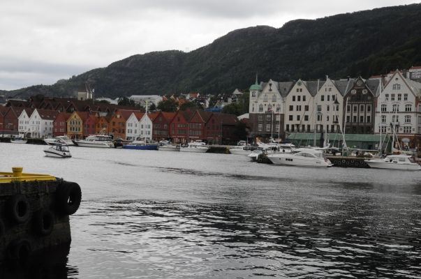
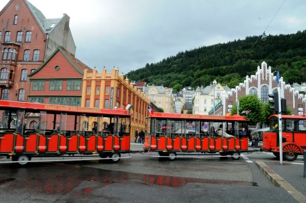
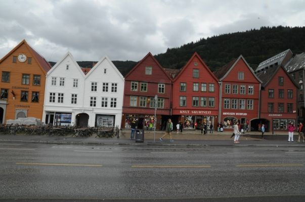
בשעה שש אנחנו יוצאים מברגן והחלטנו להתקדם לכיוון ווס ולחפש לינה בדרך. מסתבר שכביש מהיר (E13 הכביש שמחבר בין ברגן ווס) הוא לא כלכך כמו כביש 7 עם המון קמפ'ים בסביבה...
הגענו לווס בשבע וחצי והתחלנו לחפש מקום לינה- ושוב או שהכל תפוס או שיש רק 2 מיטות נפרדות. אבל קצת אחרי ווס יש הרבה קמפינגים על גדת הנהר ואנחנו מצאנו שם מקום.
הקמפ' נקרא Taulen זה לא היה קמפ' בפיקוח (ולכן גם לא קיבלו אשראי ועלה 400 NOK) אבל אחלה קמפ'. אמרנו שאנחנו בירח דבש אז קיבלנו בקתה יחסית מבודדת, יחד עם בקבוק שמפניה! בערב עשינו על האש במתחם על גדת הנהר – לצערנו התחיל מבול אז נאלצנו לסיים את הארוחה בבקתה.
הפעם גיליתי את החסרונות של בקתה ללא שירותים צמודים... תארו לכם אמצע הלילה, גשם זלעפות והשלפוחית מתפוצצת... אין ברירה אני לוקחת מטרייה ופנס ומפלסת את דרכי בבוץ עד השירותים וכמובן מקללת את כל המין הגברי על כך שהם לא חווים סבל כזה.... אבל זה כיף לחזור אחרכך לחמימות של הבקתה.
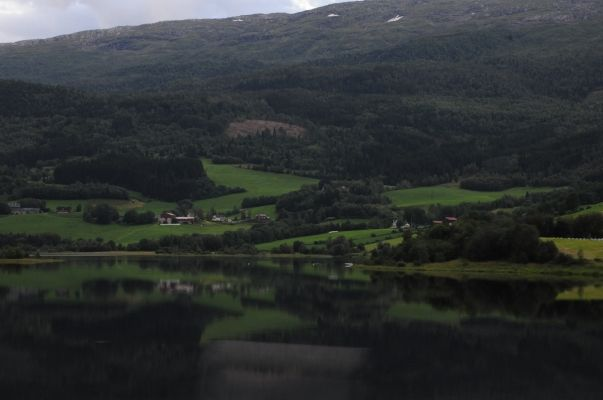
18/8- גשם גשם וקצת דגים
הגשם של אתמול לא מפסיק! זה הורס לגמרי את התוכנית שלי לטייל באיזור ווס (בקמפ' יש המון חוברות על טיולים באיזור ומצאתי אחלה מסלולים בכפר סטלהיים הסמוך). טוב נו, מכינים לנו שקשוקה וליעד הבא.
הפעם נוסעים לויק – עיירה קטנה על חוץ הסוגנפיורד (הפיורד הכי ארוך). הגשם לא מפסיק לרדת ממש מבול אבל לנו חמים ונעים באוטו.
הדרך לויק (כביש 13) מטפסת דרך ההרים, נוף משגע אולם לצערי בפסגה (1200 מ' גובה) לא רואים כלום, רק ערפל. בשלב הזה אני מודיעה לבעלי שהפעם אנחנו חוזרים ועושים את הדרך הזאת ביום יפה כי אין מצב שאני מפספסת יופי כזה. כשיורדים מההר רואים את העיירה ויק, מראה של גלויה.
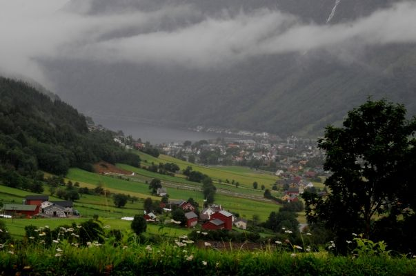
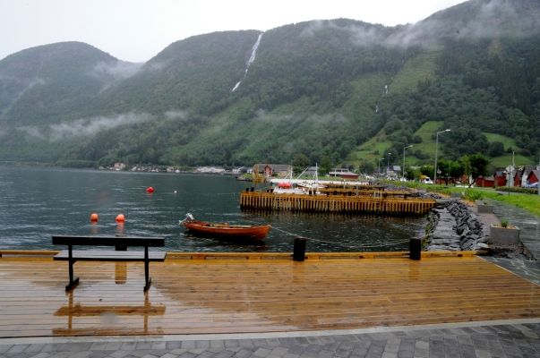
הגענו לעיירה והכל סגור (יום ראשון) למזלנו יש חנות דיג ממש בנמל שפתוחה, המוכרת מסבירה לנו על נהלי הדיג במדינה: מותר לדוג חופשי במים מלוחים (פיורדים) אבל לא בסמוך לשפך נהרות או חוות דגים. דיג בנהר מצריך רשיון שתקף רק לאותו מחוז (עלות כ-30-60 NOK) דיג סלמון מצריך רשיון ארצי בעלות של 240 NOK ותקף לכל מקום במדינה למשך שנה. ניתן לייצא עד 15 ק"ג סלמון לאדם (בהתחשב בכך שסלמון בוגר שוקל כ6 ק"מ זה לא הרבה). את הרשיון ניתן לרכוש בחלק מהקמפ'ים או מרכזי התיירות או חניות דיג.
אחרי הסבר כזה בעלי חובב הדיג מתחדש בחכה (700 NOK אבל יש החזר מע"מ) ואנו יוצאים לחפש מקום לדוג בפיורד. בחוץ נוף ממש חורפי של סערה.
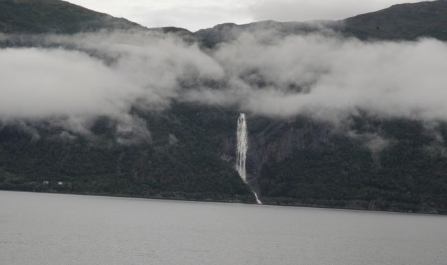
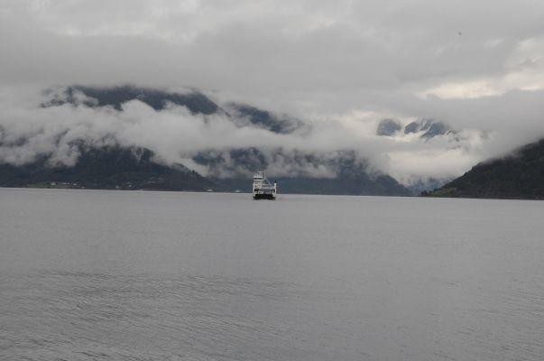
מויק אנחנו ממשיכים ימינה לכיוון Vengasnes ובדרך יש 3 קמפ'ים עם נוף משגע. מיד מחליטים לסגור את החדר להיום (למדנו את הלקח...) בקמפ' הראשון אין אף אחד.
בקמפ' השני Tevit אנו זוכים להצלחה! לא רק שיש חדרים יש גם חדר עם שירותים ומלקחת ונוף מהמם על הפיורד ב- 500 NOK! אנחנו מיד סוגרים פורקים מזוודות ונוסעים לקנות אוכל. יש חנות COOP בעיר אבל אנחנו ממשיכים לאורך הפיורד עד למעבורת (לא עולים עליה) ומשם יש מנהרה ממש מפחידה שהחלטנו לא להכנס. ליד המעבורת יש סופר JOKER שם קנינו מנגל חד פעמי ובשר. מסודרים חזרנו לקמפ' לארוחת צהריים/ערב.
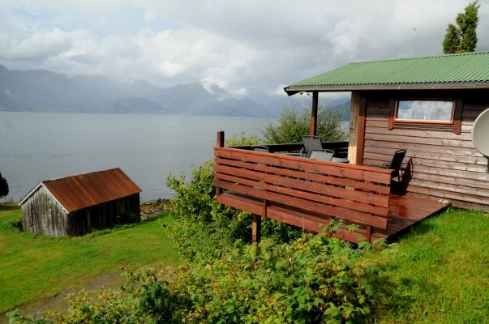
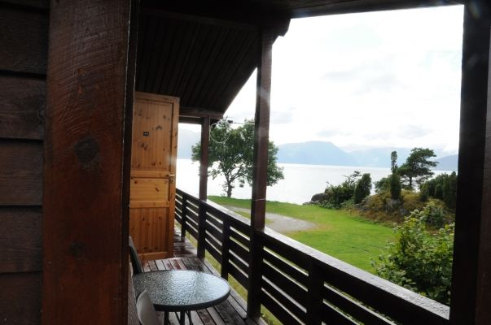
הגשם הפסיק, העננים מתפזרים והנוף מהמם. בתום האוכל עושים סיבוב בקמפ' ומגלים שיש סמוך אליו איזור לדיג (אפילו יש כלים לניקוי דגים) אנחנו מנסים את חכתנו החדשה אבל בינתיים ללא הצלחה.
בערב נוסעים לאכול גלידה בויק וחוזרים לקמפ' שלנו לזפזפ בטלויזיה (יש תוכניות רק בגרמנית או דנית) והולכים לישון.
עוד קצת תמונות מהיום:
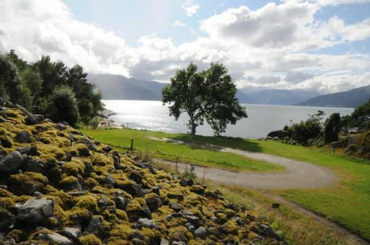
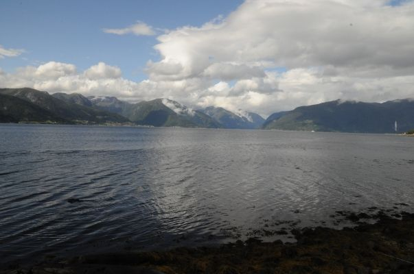
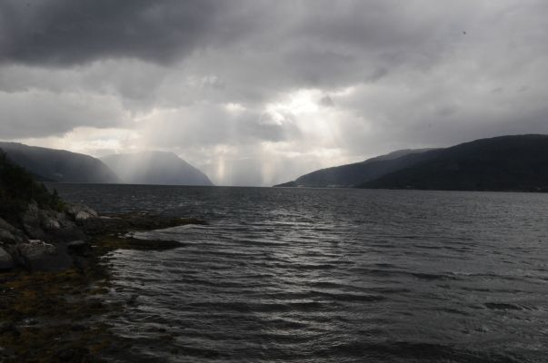
19/8 – הפעם חוזרים!
היום יש שמש. בעלי קם מוקדם ויצא לנסות את מזלו בדיג. הפעם הצליח ותפס קלמארי או סוג אחר שת תמנון, אבל הוא כלכך נגעל שהחזיר אותו חזרה לים... אכלנו ארוחת בוקר בקפיטריה בויק (הכל עדיין סגור) ויצאנו לבדוק מקרוב את כנסיית העץ העתיקה שיש בעיירה.
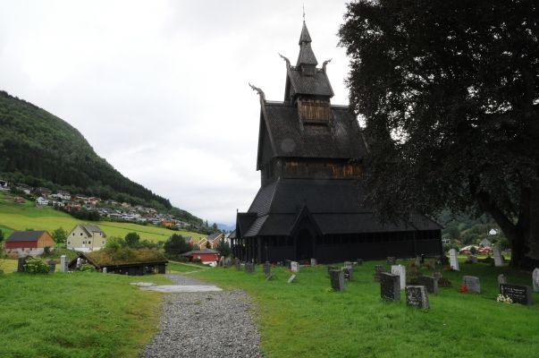
משם אנחנו סוף סוף חוזרים. נוסעים שוב במעלה ההר הנוף משגע, אבל גם הפעם אין לנו מזל, איך שמגיעים לפסגה – גשם! אמנם קצת פחות ערפל וניתן לראות את הנוף אבל עדיין מבאס.
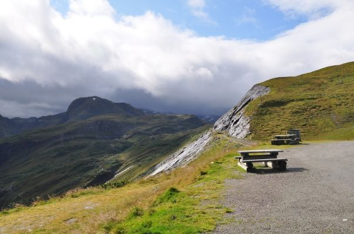
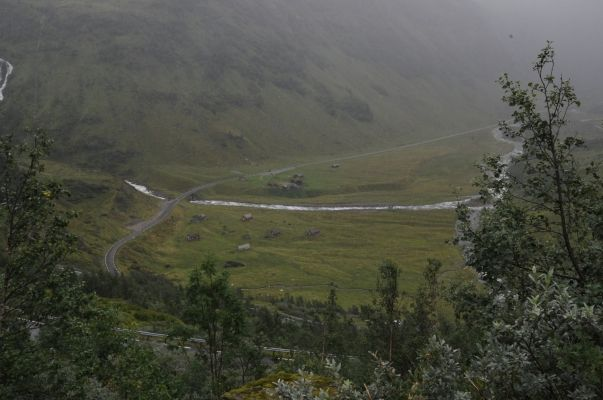
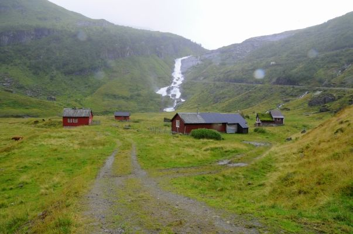
הגענו חזרה לאיזור ווס, והחלטתי למה לא לנסות לנסוע לפלם? (סגרנו עם הקמפ' שנשאר עוד לילה אז אנחנו מסודרים עם הלינה) אז נסענו.
בחוץ גשם ושמש לסירוגין. אנחנו מתקרבים לפלם וצריכים להכנס למנהרה ואז להפתעתנו הדרך סגורה. השוטר מסביר לנו שלפני שבוע היתה תאונה קטלנית במנהרה וכרגע מתקנים אותה והדרך היחידה לפלם זה או דרך סוגונדאל (סיבוב של 300 ק"מ) או מעבורת (אבל ללא הרכב), בלוח הזמנים ראינו שהמעבורות האחרונה מפלם יוצאת בחמש. עכשיו כבר 13... החלטנו לוותר – כנראה הגורל לא רוצה שנבקר עכשיו בפלם.
זה החלק היחיד של הנאפיורד שזכינו לראות...
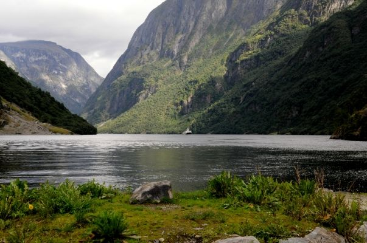
לא נורא יש תוכנית חלופית! הרי אתמול קראתי שיש מסלולים רבים בעיירה סטלהיים שנמצאת 20 דקות נסיעה. מיד שמים פעמנו לשם.
העיירה שוכנת יחסית גבוה על ההר והנוף ממנה פשוט מדהים! אמנם לא רואים את הניאפיורד (שאומרים שהוא יפהיפה בתור הפיורד הצר ביותר) אבל העמק וההרים שסוגרים עליו מדהימים. הכל ירוק, השמיים אפורים ממש דרמטי. המסלולים יוצאים מהמלון של העיירה יש שם שילוט המתאר את המסלול ורמת הקושי. אז שתדעו: מסלול ירוק – הכי קל, סלול ונוח להליכה. כחול: בינוני. אדום: מאתגר ולבעלי כושר. שחור- טיפוס הרים.
אנחנו צעירים ועשינו הרבה מסלולים בארץ אז בחרנו בכחול. התחלנו בדרך נוחה החוצה את ההרים ומפל ואחרי כקילומטר המסלול הכחול שלנו הופך לאדום שעובר ממש על הצוק. כאן עשינו אחורה פנה והחלטנו ללכת על המסלול הירוק.
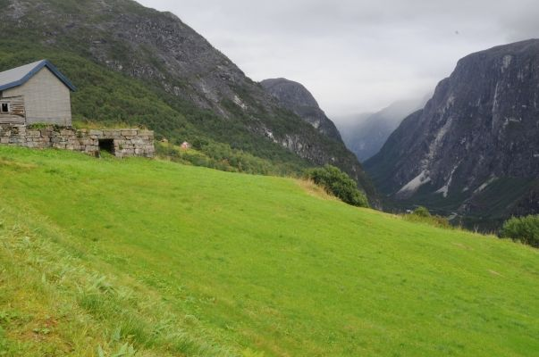
זה מסלול של קילומטר וחצי עד למפל שנמצא למטה. יורדים ברכב (כן כן לא ברגל כמו שחשבנו בהתחלה והתחלנו לרדת בכביש עם שיפוע של 18 מעלות). הנוף משגע. משני הצדדים נגלים מפלים ענקיים שיורדים לנהר אי שם למטה וזורם לפיורד. המפל יפה, ההליכה נעימה ביער, ראינו הרבה פטריות (אבל אנחנו לא מבינים בהם כלום אז העדפנו לוותר על הרעלה פוטנציאלית).
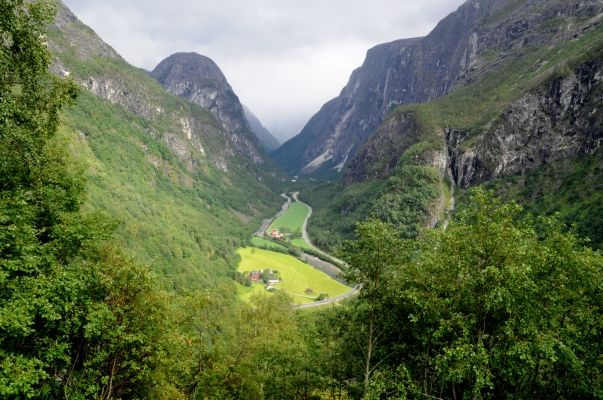
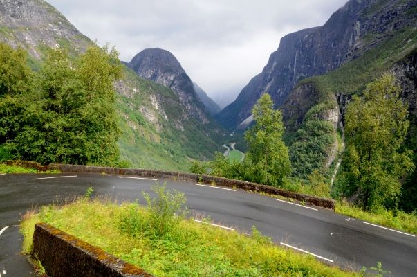
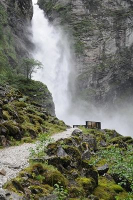
וזה המלון בסטלהיים משם יוצאים המסלולים:
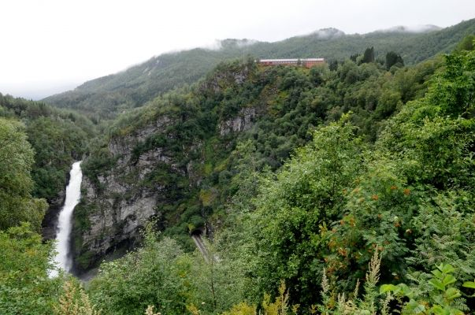
אחרי היום המעייף עצרנו ליד האגם לפיקניק צהריים והתחלנו לטפס בהר בפעם השלישית שוב לכיוון ויק- עייפים אך מרוצים.
בעליה זכינו לראות פקק, 2 משאיות שלא זזות ורכבים עומדים וכל זה בשיפוע חד... ואז גילינו את הסיבה. עדר כבשים החליט לטייל דווקא על הכביש הזה.
חוזרים לחדר לעוד ערב נעים. הפעם קנינו הרבה אוכל אז אוכלים סלמון מוקרם תוצרת עצמית (שקנינו בסופר).
20/8- עוד גשם וקרחונים.
עוזבים את הקמפינג החמוד שלנו ונוסעים למעבורת לחצות את הסוגנפיורד ולעיירה סוגונדאל. בכל מעברות ניתן לשלם בכרטיס אשראי כך שאין בעיית מזומנים כלל. היום סגרירי מאוד (כבר התרגלנו...).
אנחנו מגיעים לסוגונדאל עיירה חמודה ותוססת אבל לא התעכבנו בה, עברנו במרכז לתייר אספנו חוברות וביניהם את החוברת הכי שווה- חוברת הקמפינגים שכוללת פירוט וסימונים של כל הקמפינגים המאושרים ע"י משרד התיירות וגם מפה גדולה שעליה מסומנים גם כבישי הנוף (מסומן בירוק) והכל בחינם!
כאן התלבטנו אם לנסוע לכיוון לום או לכיוון קרחון בריקסדאלסבריין. החלטנו על בריקסדאל ויצאנו צפונה בכביש 5. הכביש יפה, חוצה פיורדים ואגמים. בשלב מסויים מרגישים את הקור ככל שמתקרבים לקרחון היוסטדאל Jostedalsbreen- (הכי גדול בנורבגיה והבריקסדאל הוא אחת השלוחות שלו). הנסיעה ארוכה ואנחנו מחליטים לחפש מקום לינה ולטייל באיזור ולהמשיך לקרחון מחר.
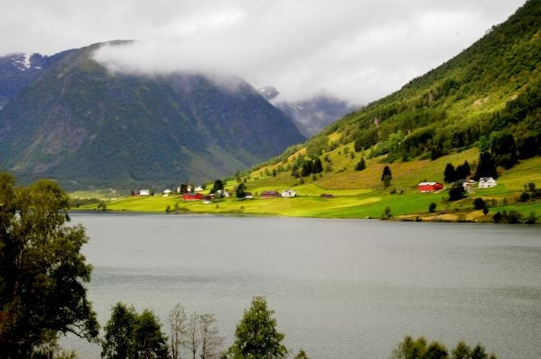
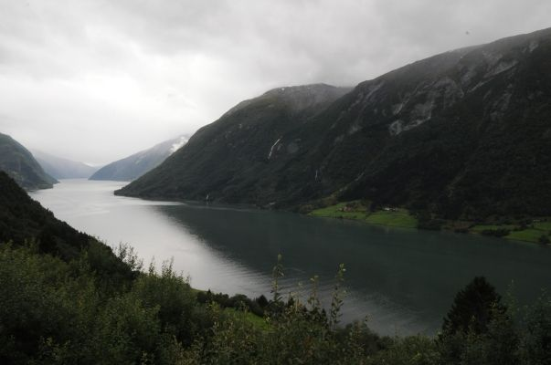
אחרי נסיעה ממשוכת אנחנו רואים שלט של משהו מעניין ואוטובוס תיירים. מיד מחליטים לנסוע אחריו ומגיעים לקרחון הראשון שלנו. אין לי מושג מה שמו רק שהוא נמצא על כביש 5. העננים היו ממש נמוך ככה שיצא כאילו יש כיסוי מעלינו, הקרחון כחול כחול ויוצר עמק בצורת U (כל הקרחונים בנורבגיה נמצאים בעמק כזה) מתחת לקרחון יש אגם עם מים כחולים ופרות המלחכות דשא. ממש פסטוראלי.
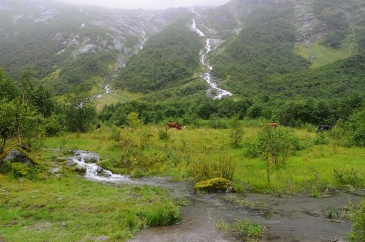
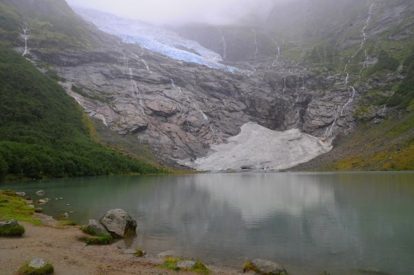
בסוף הגענו לעיירה בייקרילו (Byrkjelo) צומת כביש 5 ו-39. ממש בכניסה לעיירה יש קמפינג ענק, אבל עכשיו זה סוף עונה אז הוא היה ריק. תמורת 700 NOK קיבלנו בקתה עם שני חדרים ועליית גג שירותים מקלחת וטלויזיה (יותר גדול מהדירה השכורה שלנו במרכז), אפשר היה לקחת בקתות גם ב-200 ו-300 NOK (בלי שירותים ומקלחת צמודים) אבל אנחנו בירח דבש אז מותר להתפנק (חוץ מזה אחרי השוטטות בגשם עם פנס בדרך לשירותים באמצע הלילה מגיע לי פינוק!). בעלת הקמפ' מספרת לנו שביער ליד יש המון פטל בגלל הגשם וממליצה לנו בחום ללכת לטייל שם.
המסלול מאוד פשוט, חוצים את הכביש לכיוון המחלבה ומשם יש שביל ביער. מכל צד יש שיחי פטל, המון פטל! קטפנו דלי שלם! יש בטח עוד סוגי פירות יער אבל אנחנו לא מזהים שום דבר חוץ מפטל. ההליכה נעימה מעט טפטוף של גשם ופתאום העננים מתפזרים ויוצאת השמש וקשת מהממת! באופק רואים את כיפת הקרח על קרחון היוסטדאל. אבל ההפתעה היא בסוף. כשיוצאים מהיער מגיעים לעמק שאין מילים לתארו. אגם עם מים תכולים ברגע הרים ירוקים ומעליהם הלבן של הקרחון. ועוד כשהקשת בשמיים... לא רצינו לעזוב...
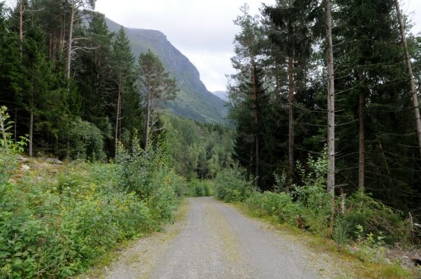
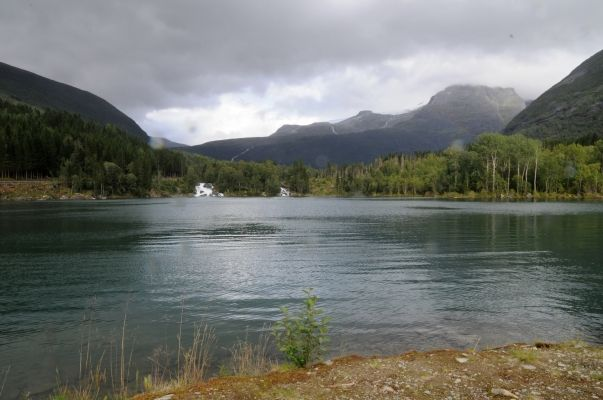
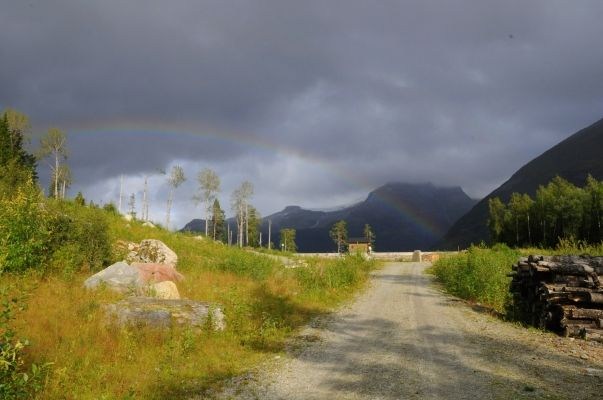
אגב המקום משמש את המקומיים בטיול היומי עם הכלב, בדרכנו חזרה נתקלנו בהרבה מטיילים, בטח עם נוף כזה גם הכלבה שלנו הייתה זוכה לטיול כזה בכל ערב!
חוזרים ל"בית" שלנו, מבשלים דגים ומקנחים בפטל טרי טרי מהשיח! אחלה סיום ליום מעייף בדרכים.
והנה הפטל:
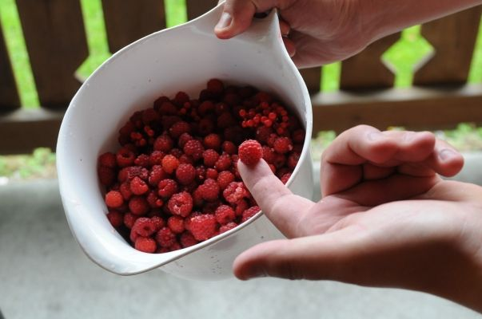
21/8 – בתוך גלויה
עדיין יום סגרירי, היום נוסעים לבריקסדאל דרך כביש 60 (שעובר בהרים ויורד לנורדפיורד). אנחנו מגיעים לאולדן ונוף שם פשוט לא ניתן לתיאור, ממש בתוך גלויה. למרות שהיום מעונן זה לא פוגע כלל. עננים לבנים ונמוכים, אגם כחול צלול והרים גבוהים ופסגות מושלגות, עצרנו ליד האגם לארוחת עשר... פשוט התענגנו על הנוף.
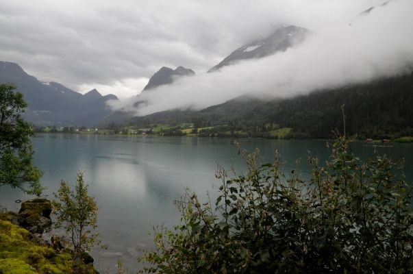
ממשיכים לקרחון, נכנסים לעמק צר עם אגם ארוך באמצע, לכל אורך העמק פזורים קמפ'ים.
הגענו לחניה (שעולה 50 NOK ) במקום קפיטריות, מרכז מבקרים ומה לא, כיאה לאתר מתוייר. זה הקרחון המפורסם ביותר בנורבגיה ובהחלט מוצף בתיירים למרות טפטוף הגשם.
מהחניה מדובר בהליכה של 3 ק"מ בעליה קלה עד לקרחון, ניתן גם לנסוע ברכב מיוחד אבל אנחנו לא תומכים בלזהם את הסביבה ולכן צועדים יחד עם תיירים רבים את שלושת הק"מ עד לקרחון. הדרך עצמה נוחה וחביבה, נוף של מפלים ונהר לבן, עננים לבנים נמוכים היוצרים תחושה של עשן. בדרך יש שלטים שמראים עד היכן היה הקרחון לפני 200 שנה, 100 שנה וכו (כן הוא מצטמצם משמעותית) אבל הייתה תקופה שכל כיפת הקרח נמסה ונוצרה מחדש, כך שאולי יש תקווה שהוא לא ייעלם.... הקרחון נמצא בעמק U מתחתיו אגם עם מים בצבע טורקיז (טבלתי את רגלי היה קר מאוד), היה מאוד משעשע לשמוע עברית ולראות קבוצת תיירים מהארץ מניחים דגל ישראל ומצטלמים עם הדגל על רקע הקרחון...
בקיץ אפשר לעשות ראפטינג (אבל אנחנו באוגוסט וזה כנראה לא קיץ, בטוח לפי הגשם שלא מפסיק לרדת)...
חוזרים לרכב ומתלבטים אם לישון בעמק או להמשיך הלאה, בגלל שעוד מוקדם החלטנו לנסות למצוא מרק בעיירה אולדן – לא מצאנו כלום, אז המשכנו לעיירה סטרין ששוכנת על אגם טורקיז מהמם. (אגב הערה לגבי צבע המים, קראתי באחד השלטים שם שמסביר שככול שהמים קרים יותר הם כחולים יותר בעוד שמים יותר חמים יהיו בצבע טורקיז...).
בסטרין יש מרכז קטן ושוקק מסעדות ובתי קפה, נכנסנו לאחד והזמנו קפה וטוסט – תענוג שעלה לנו ב-120 ₪... (סתם לדוגמא המבורגר 120 גרם עולה 130 NOK שזה כ-78 ₪).
מצאנו קמפ' עם נוף מדהים על האגם (אולם הפעם בגלל הנוף התפשרנו ולקחנו חדר בלי שירותים ומקלחת... לא נורא), יצאנו לטייל קצת לאורך האגם אבל נאכלנו ע"י היתושים אז חזרנו, אכלנו ארוחת ערב ולישון (הפעם לא היה גשם בלילה J).
22/8- סוף סוף שמש
אז אחרי שבוע של גשם קמנו ליום שמש! איזה כיף שמיים כחולים עננים לבנים ושמש! התפנקנו בפנקייקים לארוחת בוקר ויצאנו ליעד של היום – גרייניגר.
ממליצה לכולם לנסוע דרך קטע כביש 258 (אמנם מאריך את הדרך בכמה ק"מ אבל שווה). גם הפעם עולים להרים 1200 מ' גובה... שלג על פסגות ההרים ואגמים בצבע תכלת ובהם משתקפת השמש. עצרנו להפסקת עשר מול אחד האגמים האלה ממש חוויה.
פתאום אנחנו רואים עדר כבשים דוהר לכיוונינו כשהם מתקרבים הם משמיעים "מהה מהה" ומאיצים לכיוונינו, אנחנו נבהלים ונכנסים לאוטו. הכבש המוביל עוצר ליד הרכב מסתכל צועק "מההה" ופונה לכיוון השני... כנראה שהם לא אוהבים פולשים...
בהמשך, הכביש מתחבר לעיירה גרוטלי ולידה יש מטוס נאצי. מסתבר שבמקום היה קרב בין הבריטים לנאצים שהסתיים בהפלת שני המטוסים. הצוותים שרדו וחיפשו מקום מסתור מהשלג. בסופו של דבר הנאצים והבריטים חלקו את אותה הבקתה ושרדו שם את הסערה. הסיפור עובד לסרט ב-2012 וצולם בעיירה.
משם עולים על כביש 63 – דרך נוף. הדרך מהממת, אנחנו מאוד גובה בהרים, שלג על הפסגות. מגיעים לדלסניבה (ההר הצופה על הפיורד בגובה 1500 מ') העלייה אליו בתשלום אז ויתרנו והמשכנו לכיוון גריניגר.
הדרך מתחילה לרדת ונגלה הפיורד, נוסעים ממש בתוך העננים ורואים מטה את העיירה ואת האוניות העוגנות. פיורד זה הוגדר כאתר לשימור מורשת עולמית ע"י אונסק"ו והוא בהחלט מרשים.
אנחנו מתמקמים בבקתה בהרים עם נוף על הפיורד (יש במקום מסעדה ומשם יש מסלולים רבים לטיול). עלות 600 NOK לבקתה עם שירותים ומקלחת (2 חדרים).
אנחנו יורדים לטייל בעיירה, שותים קפה ומצטיידים בסופר.
השעה 16:00 וזה זמן מעולה לעשות מסלול בסביבה. אנחנו בוחרים את המסלול הירוק למפל strosfossen שניתן להיכנס מאחוריו. בזכות השעה היחסית מאוחרת אין הרבה אנשים במסלול ומי שאנחנו פוגשים הם בכיוון ההפוך. המסלול הוא 2 ק"מ (אבל בעלייה!) לא נורא הולכים בקצב איטי ועוצרים להתפעלות תכופה מהנוף. עד כדי כך חם שבעלי עובר לקצר...
במהלך העלייה אני כמעט מתנגשת בכבשה (שחשבתי בטעות שזה כלב עד שהיא השמיעה "מהההה") התוצאה שאני זינקתי לכיוון אחד והיא זינקה לכיוון השני בעוד שבעלי מתפקע מצחוק...
אז אחרי הליכה של כשעה (הרבה הפסקות צילום) מגיעים למפל. הוא מאוד גבוהה ומרשים. ניתן להיכנס מאחוריו אבל ממש בזהירות, הכל חלק ויש רק מעקה מסכן להיאחז בו. ישבנו על הפסגה עוד כחצי שעה עד שקרקורי הבטן הורידו אותנו לבקתה.
אז מה אוכלים אחרי מאמץ גופני שכזה? סטייק אנטריקוט על האש!!! אנחנו אוכלים על המרפסת על ההר עם נוף לפיורד וכשמחשיך ונהיה קר נכנסים לבקתה להתחמם ולישון (אחרי 22:00 הכל דומם וחשוך...).
שבועיים בארץ הפיורדים - נורבגיה חלק 2
המשך הטיול שלנו בנורבגיה
לכל התמונות מהטיול:
https://www.flickr.com/photos/127066806@N05/sets/72157647684647537/
23/8- נשרים וטרולים
את הבוקר התחלנו בשייט בגרייניגר פיורד (190 NOK לאדם) בשעה 9 בבוקר. אמנם יום שמשי אבל על הסיפון קור אימים! החזקתי מעמד כחצי שעה ואז ברחתי למטה להצטרף לבעלי שכבר התחמם לו עם כוס קפה. השייט נחמד בדרך רואים את החוות הנטושות וכן את המפלים (מפל האחיות, מפל המניפה) אבל בגלל שזה אוגוסט הזרימה חלשה ולא כלכך התרשמתי מהם. מי שרוצה יכול לרדת באמצע לטיול באזור החוות.
בתום השיט קפצנו לחנות מזכרות לקנות טרול קטן וקצת מחזיקי מפתחות לאוסף J. ממשיכים בנסיעה על כביש 63 שהופך להיות דרך הנשרים. הכביש מפותל אבל מלא בנקודות עצירה יפות ומטופחות (שנבנו יחסית לא מזמן). משם רואים את הפיורד והעיירה – מאוד יפה.
גרייניגר פיורד - תצפית מדרך הנשרים:
אנחנו ממשיכים על כביש 63, בגלל שהיום שמשי הנופים פשוט עוצרי נשימה, הכל משתקף באגמים... באחת העיירות קנינו אוכל מוכן ועשינו פיקניק על גדת הנהר בצהריים עם גלידה כמובן :)
כאן עשינו פיקניק - המקום משגע וממש רציתי לקפוץ למים לשחייה קלה... חבל שהבגד ים לא היה בשלוף...
לאט לאט כביש 63 מטפס למעלה לגובה 1100 מ', הפעם הנוף מלא באגמים כחולים וסלעים אפורים ושלטים "זהירות טרולים חוצים" והגענו לדרך הטרולים.
האתר יפיפה, מפלים, מזרקות מרפסות תצפית תלויות מעל תהום – לא לבעלי פחד גבהים! בעלי הסובל מפחד גבהים ממש חשש בהתחלה לעמוד על המרפסת, אבל לאט לאט התגבר...
רואים את הכביש המפותל שנראה כמו מדרגות שבהן יעלה טרול. אחרי סבב תמונות ואנחנו יורדים בדרך הטרולים, אין הרבה רכבים ככה שלא נדרשנו להיצמד יותר מידי לשוליים. ירדנו לעמק והמשכנו לכיוון אנדלסנס.
בגלל שרציתי לטייל באלסונד וגם בדרך האטלנטית החלטנו למצוא לינה בין אנדלסנס לאלסונד כדי שלא נצטרך לחפש לינה בשתי הלילות הבאים. ואכן מצאנו קמפ' פרטי בעיירה vikebukt בקתה מהממת עם מטבח יותר משוכלל ממה שיש לנו בבית! על גדת הפיורד. 700 NOK נשארנו בה 3 לילות.
הבקתה האמצעית היא שלנו:
וזה הנוף:
ממש מתחת לחלון יש מעגן סירות וזה מקום מושלם לדיג. בעלי מיד מצטייד בחכה ובירה ויורד לדוג והפעם חוזר עם שלל: 3 דגי מקרל!!! ארוחת הערב כוללת הרבה דגים היום J.
24/8 – ונציה בנורבגיה?
זה הנוף בבוקר מהבקתה:
אחרי מנת פנקייקים ודיג בוקר אנחנו נוסעים לעיירה אלסונד, נסיעה של שעה בכביש 136.
אלסונד שוכנת על לשון יבשה בין שני פיורדים. הייחוד שלה זה הבנייה בסגנון האר נובו (כמו פראג) וזאת עקב הרס מרבית המבנים בשריפה ב-1904.
העיירה מזכירה גם את ונציה עם תעלות המים שחוצות אותה.
היום ממש חם ואפילו אני עם שרוול קצר.
שוטטנו קצת בעיר, בנמל וצפינו בבתים היפים (כמו עיר אירופאית טיפוסית בעיני). משם הלכנו למצפה אקסלה הצופה על העיר מגובה 500 מ' או 418 מדרגות.
וככה נראת העיר ממצפה אקסלה:
אגב, בין כל האיים באופק מקשר כביש שעובר מתחת לים...
אכלנו גלידה (איך לא? ביום כזה חם) והחלטנו לתת צ'אנס לאקווריום של העיר (האקווריום הכי גדול בסקנדינביה). זה לא המצפה התת ימי באילת אבל המקום חביב מאוד במיוחד לאור הפינגווינים שלו – יש מתחם ענק לפינגווינים. בסך הכל חוויה לא רעה בעלות של 180 NOKלאדם.
חוזרים לבקתה שלנו ובדרך קונים פיצות להכנה במיקרו (טעים טעים!) ואחרכך אנחנו מחליטים לנסות לדוג ממרכז הפיורד בשיט על אחת הסירות.
בעל הקמפ' אפילו לא מחייב אותנו על הסירה, נותן לנו אפודי הצלה ואומר שנבחר איזה סירה שאנחנו רוצים. קצת פחדנו לקחת סירת מנוע (חשבנו שלא נצליח להפעיל אותה או לנווט איתה) אז הלכנו על סירת משוטים וזה ממש לא קל כמו שזה נראה! (המשוטים לא מחוברים לסירה ואני כבר דמיינתי איך אני מפילה בטעות משוט למים...), בהתחלה בעלי חתר למרכז הפיורד אבל כל הזמן נסחפנו לחוף, ואז אני חתרתי קצת אבל בשלב מסוים חתרנו כשאני אוחזת במשוט אחד ובעלי בשני.
הדיג היה מוצלח וחזרנו עם עוד 3 מקרלים. בעיני השיט שלנו עם סירת המשוטים בשעת הערב בפיורד היה אחד מרגעי השיא, השקט והשלווה והנוף המהמם ממש מרגוע לנפש (לא כלכך לגוף כי השרירים היו תפוסים אחרכך).
עוד קצת תמונות מהקמפ':
25/8 – הדרך האטלנטית
עוד יום שמש!!! היום יום ראשון ואנחנו בדרך לעיירה מולדה (עיר הורדים) לוקחים מעבורת מהעיירה vestnas בעלות של 160 NOK שזה ממש יקר, ואז הסתבר שההפלגה היא ארוכה כ-40 דקות. במעבורת יש קפיטריה אז נהננו מגלידה כרגיל.
זה הנוף מההפלגה:
כשהגענו למולדה עלינו על התצפית ה-VARDEN. אומרים שמולדה מוקפת ב-222 פסגות הרים, הנה תמונה מוזמנים לספור J
במקום יש המון מסלולי הליכה בתוך היער וכאלה עם נוף לפיורד. מי שרוצה בהחלט יכול להקדיש למקום כמה שעות טובות בשוטטות בטבע. גם תושבי העיירה מנצלים את המקום להליכות וטיולים. אנחנו לא התעכבנו כי יום ארוך לפנינו...
משם נסענו לעיירה באד (עיירת דייגים קטנה) וגילינו שם בונקר מימי הנאצים שהוסב למוזיאון, בגלל שזה יום ראשון המוזיאון עצמו היה סגור, אבל עדיין ניתן היה לטייל בשטח הבונקר ולהתרשם מכלי הנשק והמחפורות כל זה על רקע העיירה והאוקיינוס.
העיירה באד:
טיילנו שם קצת וממשיכים לדרך האטלנטית.
הדרך נחשבת פלא ארכיטקטוני, היא מחברת כ-100 איים קטנים ובנויה בצורת גל וכוללת המון גשרים. לדעתי אם היום יפה כמו שלנו אז בהחלט מומלץ לנסוע, אך אם מדובר ביום גשום כדאי לוותר.
אנחנו נהנינו. עצרנו באיים וטיילנו שם, צפינו באוקיינוס האטלנטי ובהמוני השחפים החגים סביב. מעל אחד הגשרים עשו עמדות לדיג משני צידי הגשר והוא היה מלא בדייגים. חצינו את הגשר המתעקל וחזרנו חזרה (די מיצינו אז לא המשכנו עד קריסטיאנסונד). על אחד האיים עשינו פיקניקון, אגב יש שם המון נקודות עצירה מסודרות לפיקניק, ואפילו קפיטריה ככה שאל חשש...
קצת תמונות מבדרך האטלנטית:
גשר לדייג:
בדרך חזרה יש מערה (נקראת מערת הטרול) עצרנו ליד אבל קראתי שמדובר בכ-2 ק"מ הליכה עד המערה, כבר היינו עייפים וויתרנו על התענוג.
גם במולדה לא היה מה לעשות כי בגלל יום ראשון הכל היה סגור והעיירה נראתה כמו עיירת רפאים. אז שתינו קפה במסעדה קטנה הצופה על הפיורד בזמן שהמתנו למעבורת. אחרי חצי שעת המתנה עלינו למעבורת ואנחנו שוב בבקתה הכיפית שלנו.
זו המעבורת:
הפעם זכינו בשכנים נחמדים, משפחה מרוסיה שנסעה לטייל ברכבה הפרטי (אנחנו דוברים רוסית אז היה לנו קל לתקשר) אז העברנו ערב בנעימים עם המלצות וטיפים אחד לשני על המסלול וכמובן זכינו לטעום פנקייקים רוסים אמיתיים שהוכנו זה עתה :) - אנחנו תרמנו דגים שבעלי דג...
26/8 – חזרה דרומה
היום אנחנו עוזבים את הבקתה המהממת שלנו ושמים פעמנו דרומה לכיוון העיירה לום.
הנסיעה די ארוכה ומשעממת (למעט נהר חמוד שהופך למפל, לא רחוק מדרך הטרולים).
ה-GPS החליט שיהיה יותר מהר אם נסע דרך השמורה ריינהיים, אבל חוץ מפרות שחורות והרבה אבק לא ראינו הרבה.
הנה תמונה של הנהר:
קצת לפני לום הגענו לאגם ובו משתקפים הרים מושלגים של שמורת ה- Jotunheimen. מקום מעולה לפיקניק! כאילו משיהו שמע אותנו, אחרי מס' מטרים אנו רואים ספסלים...
התמקמנו בקמפ' KVALE בעלות של 550 NOK עם שירותים ומקלחת (בהשוואה לבקתה שלנו אתמול ממש ירידה אבל זה מה יש).
נסענו לטייל בלום, העיירה יפה בנויה כולה מעץ, שם גם נמצאת כנסית העץ הגדולה בנורבגיה.
עשינו מסלולון סביב האגם, בדרך ראינו קמפינג ממש מושקע שזה גם מלון וגם בקתות ופארק ענקי, אבל המחיר היה כ-1000 NOK. ליד היתה אומגה ממש מעל הנהר ונורא הצטערתי שהיא סגורה (סוף הקיץ זה ב-20/8 אז מה שיש שמש וממש חם... מבחינתם זהו נגמר הקיץ).
מהעיירה יוצאים המון מסלולים אבל רובם בצבע אדום וכוללים טיפוס על הרים.
חזרנו לחדר למנת סטייק אנטריקוט ולישון.
27/8- שלג באוגוסט
היום נוסעים על כביש 55 לכיוון שמורת ה- Jotunheimen וקרחון הניגרסבריין.
זה אחד הכבישים הכי יפים בנורבגיה אם לא ה- כביש הכי יפה!
הדרך לשמורה עוברת ביער שם אפשר לעצור לפיקניק, אנחנו עוצרים בכל נקודת תצפית אפשרית לצילום – הנוף משגע. לאט לאט אנו עולים, מד הגובה ב-GPS מראה 1434 מ'!
האווירה במקום היא כאילו הגענו לפסגת העולם, שקט, קריר פסגות מלאות שלג אגמים כחולים כחולים והשמש מאירה.
פתאום אנחנו רואים משטח מכוסה שלג ומיד יוצאים מהרכב ל"שחק". מדובר בשלג שנמס וקפא שוב ושוב ולכן רק דורכים עליו וכבר מחליקים אבל בשבילנו זו חוויה שלא מהעולם הזה! מתי נזכה לשלג ועוד באוגוסט?!
לאט לאט אנחנו יורדים לעמק (עוצרים בכל פינה לצילום).
עם כל ההתרגשות לא שמנו לב למד הדלק, שכבר מראה סימני אזהרה... איזה מזל שאנחנו כבר בירידה, שמים על ניוטרל ומקווים שלמטה יש תחנת דלק. המזל האיר לנו פנים ובתום הירידה יש לא רק תחנת דלק אלא גם רשת COOP, מיד קונים נשנושים וגלידה!
היעד הבא הוא קרחון הניגרסבריין (גם הוא שלוחה של היוסטדל).
בהרבה טיפים שקראתי אמרו שהוא הרבה יותר מרשים מהבריקסדאל ושניתן לקחת שיט ממש עד הקרחון אז מה לא נלך?
נוסעים בעמק צר עם נהר לבן זורם בו – אידאלי לדיג ואכן יש הרבה דייגים בסביבה.
לא רחוק מהקרחון נמצא מרכז המבקרים ממנו ניתן לצאת לסיור הליכה על הקרחון, אנחנו נסתפק בהליכה עד הקרחון J.
ניתן לחנות במרכז המבקרים בחינם וללכת כ-2 ק"מ עד החניה השנייה. אנחנו מתעצלים ומשלמים 40 NOK וחונים בחניה הקרובה ממנה גם יוצא השיט בעונה (אבל אנחנו כבר אחרי תום העונה אז אין שיט).
משם הקרחון נראה ממש קרוב אז אנחנו חושבים שמקסימום חצי שעה ונחזור אז זהו שלא...
מה שנראה כשטח מישורי הוא בעצם הרים וגבעות של אבנים שנפלו מהקרחון וההליכה היא לא קלה ונמשכת כשעה וחצי (בקצב איטי עם הרבה עצירות לצילומים) עם הרבה עליות וירידות, יש אפילו קטע שנאחזים במעקה כי פשוט לא ניתן לעבור אחרת . עדיין שווה כל רגע, קצת מאתגר, הנוף יפה והקרחון הולך ומתקרב.
הגענו ממש עד הקרחון ושם יש שלט שאסור להתקדם הלאה מחשש לנפילת סלעים, ואכן כשעומדים שם הסכנה נראית מוחשית ממש, יש המון סלעים פזורים בסביבה ותחושה שעוד רגע ויפול עוד סלע ממש על הראש.
הקרחון עצמו ענק ומרשים אבל גם הוא הולך ונסוג בגלל ההתחממות.
בדרך חזרה אני עולה על סלע ליד מרכז המבקרים ומצלמת את כל הקרחון. כך הוא נראה במלואו:
משם אנחנו שוב בדילמה, האם לחזור ללום או לחזור לסוגונדאל (צריכים להתחיל בדרך חזרה לאוסלו....) בסוף החלטנו לנסות את כיוון סוגונדאל (לא היינו בצד הזה של הפיורד) אז התחלנו בחיפושי הלינה.
ביש המזל של תחילת הטיול חזר לרדוף אותנו היום כי הקמפ' היחיד שמצאנו בו חדר היה בלארדל ב- 690 NOK לדירה וזה כבר בשעה 21:00. מדובר במתחם קמפינג ענקי בכניסה לעיירה עם כל השירותים, אנחנו כבר התפנקנו אז רצינו חדר עם שירותים ומקלחת צמודים והיה רק דירה פנויה (זה בניין של 2 קומות ובו 8 חדרים, ממש דירה קטנה).
היינו כבר כלכך תשושים שלא היה אכפת לנו, העיקר שיש מקום לישון.
זהו הטיול מתחיל להיגמר, מחר נסיעה ארוכה לכיוון אוסלו...
28/8 – שוב בדרכים
היום אנחנו צריכים להגיע לאוסלו ככה שתהיה לנו נסיעה ארוכה. קראתי בעלונים של הקמפ' שבעיירה לארדל (איפה שישנו) יש את מרכז הסלומון הנורבגי, היות ובעלי חובב דיג החלטנו לקפוץ ולראות במה מדובר.
המרכז נמצא מעבר לכביש של הקמפ', כניסה עולה 90 NOK לאדם. בסך הכל מדובר בשני חדרי מוזיאון אשר מציגים את חיי הסלמון, ריכוזי הסלמון בעולם, קצת על היסטוריית הדיג בעיירה (שהיא המרכז לדיג סלמון בנורבגיה) וראינו סרט ממש יפה על חיי הסלמון. בקיצור אנחנו מאוד נהננו. מה שתרם להנאה היה שבאנו ממש מוקדם וחוץ מאיתנו ועוד זוג המוזיאון היה ריק ככה שבשקט יכולנו לבחון כל מיצג.
מייצג מעניין שיש שם זה משקולת בצורת סלמון, הסלמון הכי גדול שנתפס שם אי פעם שקל 35 ק"ג (נסו להרים את המשקולת כדי לדמיין מה זה למשות דג כזה שמן מהמים), המשקולת השנייה היא של 7 ק"מ (שהיא המשקל הסטנדרטי של הסלמון), גם אותה לא כזה קל להרים ודמיינו לכם שה-7 ק"מ האלה עוד מתנגדים לכם... מסתבר שלא כזה פשוט לדוג סלמון.
כאן היתה לנו הזדמנות לנסוע לארלונד ומשם לפלם (מה שלא יכולנו לעשות בגלל המנהרה החסומה בתחילת הטיול) אבל בחרנו שלא, גם כי לא רצינו להיות לחוצים עם ההגעה לאוסלו וגם כי צריך להשאיר משהו לפעם הבאה J. אז נסענו לבורגונד (יש כנסיה עתיקה מעץ שמשמשת להרבה צילומים של סרטי ויקינגים).
בדרך לבורגונד יש גם כביש צידי שמוביל לכל מיני עתיקות - אנחנו הגענו ישר לכנסיה.
אחרי שעשינו עצירת גלידה בעיירה וראינו את הכנסיה החלטנו לנסוע לכוון המסאדאל (ההרים סביב העיירה גול) חשבנו שיהיו שם אתרים מעניינים אולם חוץ מנופים שכבר ראינו לא היה שום דבר מעניין (זה ממש לא העונה לטייל שם, המקום מתעורר לחיים רק בחורף).
כאן עשינו טעות ובמקום לחזור לכביש 7 היפה וליהנות ממנו בשמש החלטנו לנסוע בדרך אחרת מה שיצא שהעברנו את כל היום ברכב עד שהגענו בסביבות שבע בערב לקמפינג על כביש 35 (שעה מאוסלו) בשם ODIN. באיזור של אוסלו כמות הקמפ'ים הולכת ומתמעטת. לקחנו בקתה בעלות של 500 NOK ללא שירותים ומקלחת אבל עם נוף יפה לאגם.
על האש אחרון ולישון...
29/8- העיר הגדולה
נפרדים מכל הקמפינגים היפים של נורבגיה... היום אנחנו כבר בעיר הגדולה ביום האחרון של הטיול.
אחרי שעה נסיעה מהקמפ', ללא פקקים למזלנו, הגענו לעיר בשעה 10. מיד הלכנו לחפש את המרכז לתייר כי רצינו לקנות את כרטיס ה- oslo pass בעיקר בגלל החניה (חינם) וגם כי החלטנו ללכת למוזיאון הספינות הויקינגיות (והכרטיס מאפשר כניסה חינם). קנינו את הכרטיס (לא זוכרת כמה הוא עלה) וקינחנו בפיצה (שעלתה 200 ₪) ברחוב הסמוך במרכז אוסלו.
המוזיאון נמצא בחלק אחר של אוסלו ומציג 4 ספינות ויקינגיות שנמצאו. הספינות משוחזרות ויש לידן תיאור מפורט על כל ספינה ועל המטען שנשאה. חלק נוסף של המוזיאון מציג את כל הפריטים הויקינגיים שנמצאו על הספינות (הספינות שימשו בעיקר לקבורה).
משם נסענו לטייל בפארק ויגולד (פארק הפסלים) של הפסל הנורבגי המפורסם. המקום חביב מאוד והעברנו שם שעתיים בכיף בטיול סביב הפסלים ובישיבה על הספסלים סביב האגם.
חזרנו לעיר העתיקה, חנינו את הרכב- בחינם! והלכנו לטייל בעיר עצמה, ראינו את הפרלמנט, מרכז נובל לשלום ועוד.
משם המשכנו לטיול בבית האופרה המרשים מאוד וקינחנו בטיול במצודת העיר.
אחרי הפסקת קפה הגיע זמן להיפרד ולנסוע למלון שלנו – אותו מלון בו ישנו כשנחתנו בנורבגיה.
הגענו למלון ב-21:00 ארזנו תיקים, מקלחת, מחר על הבוקר טיסה למוסקבה, לעוד מפגשון משפחתי של כמה שעות ואז לארץ.
זהו נגמר :(
כמה טיפים כלליים:
לינה: לדעתנו רק בקמפינגים, ונסו להגיע מוקדם כי כך אפשר לתפוס חדר טוב במחיר סביר. להביא מצעים ומגבות, חבל לשכור או לקנות.
דלק ואוכל: הדלק כמו בארץ, אנחנו נסענו כ-3000 ק"מ. אוכל אם קונים ברשת COOP אז המחיר ממש כמו בארץ. אל תבזבזו כסף במסעדות, זה יקר בטירוף. בכל קמפ' יש מטבחון ואפשר להכין הכל. בבוקר היינו אוכלים שקשוקה חביתה או פנקייקים (שכבר מוכנים יש רק לחמם), צהריים היינו מכינים סנדביצ'ים וארוחת ערב היינו משקיעים ומבשלים. ימי ראשון הכל סגור באזורי הפיורדים וגם החניות מה שעובד עובד עד שש בערב. שימו לב לזה כדי להיערך.
אתרים: אתרי הטבע בחינם. יש לא מעט כבישי אגרה (אופן הגבייה דרך שבב שיש ברכב השכרה שמחייב את חברת ההשכרה שמחייבת אתכם).
לגבי מסלולי הליכה שימו לב לצבע. לפעמים גם מסלול ירוק הוא לא כזה קל כמו שמתואר. רוב המסלולים הם בעליה ומצריכים מעט מאמץ.
מזג אוויר: אנחנו חווינו את כל הסוגרים. השבוע הראשון שלנו היה גשום מאוד ובשבוע השני הקיץ החליט לחזור. גם אם יורד גשם ממש לא נורא הוא כנראה יפסק תוך מס' דקות ואם לא אז זה בעיקר טפטוף (עדיין מבאס אבל לא מפריע לטייל). מומלץ להתלבש בשכבות, בעלי למשל היה עם חולצה קצרה מתחת ומעל לבש חולצת פליז ומעיל, אני הייתי עם חולצה ארוכה למטה או סוודר דקיק מעל פליז ומעל מעיל, כשהיה חם - בעיקר כשהולכים פשוט מורידים שכבה.
כסף: אנחנו המרנו בארץ 2000 NOK היינו צריכים למשוך עוד 1400 במהלך הטיול. השתמשנו בכסף רק כתשלום עבור קמפינגים בהם לא היה כרטיס אשראי (רק באלה הפרטיים, אלה באישור משרד התיירות מקבלים אשראי). פרט לזה כל קניה ניתן לעשות באשראי ואפילו כדאי. חבל להסתובב עם הרבה מזומן. ניתן למשוך בקלות כסף מכל כספומט (הכל באנגלית אז אין בעיה).
סך הכל טיול ל-14 יום עלה לנו 20 אלף שח לזוג (כולל הכל, אוכל, דלק, טיסה וכו).
מקווה שנהנתם!